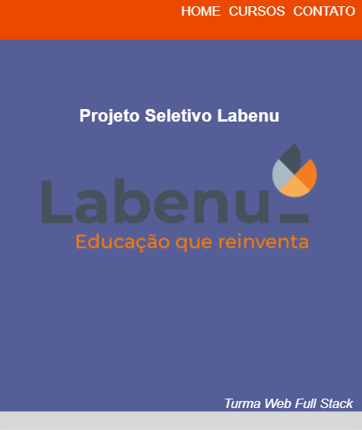

Projeto de Seleção Labenu
Página com design responsivo desenvolvida para a seleção da Labenu.
Você pode visitá-la.

Seleção Labenu
Página com design responsivo desenvolvida para a seleção da Labenu.
Você pode visitá-la.
Seleção Labenu